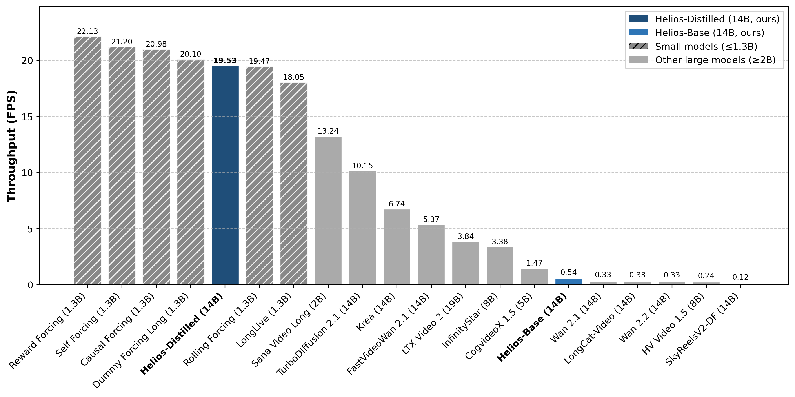
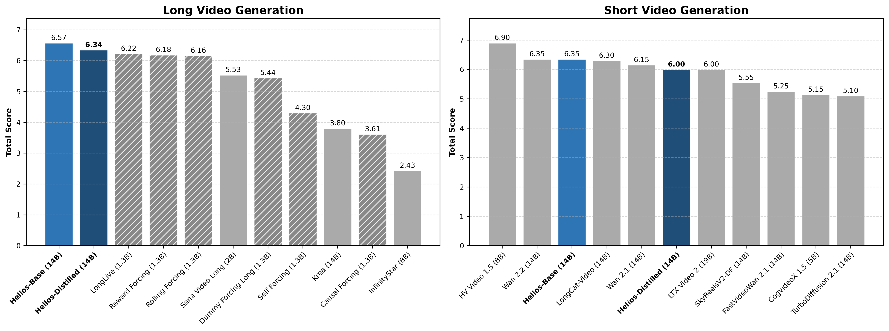

We introduce Helios, the first 14B video generation model that runs at
19.5 FPS on a single NVIDIA H100 GPU and supports minute-scale generation
while
matching the quality of a strong baseline.
We make breakthroughs along three key dimensions:
(1)robustness to long-video drifting without commonly used anti-drifting
heuristics
such as self-forcing, error-banks, or keyframe sampling;
(2)real-time generation without standard acceleration techniques
such as KV-cache, sparse/linear attention, or quantization; and
(3)training without parallelism or sharding frameworks,
enabling image-diffusion-scale batch sizes while fitting up to four 14B models within 80 GB of GPU
memory.
Specifically, Helios is a 14B autoregressive diffusion model
with a unified input representation that natively supports T2V, I2V, and V2V tasks.
To mitigate drifting in long-video generation, we characterize typical failure modes and propose
simple
yet effective training strategies that explicitly simulate drifting during training, while
eliminating
repetitive motion at its source. For efficiency, we heavily compress the historical and noisy
context
and reduce the number of sampling steps, yielding computational costs comparable to—or lower
than—those of 1.3B video generative models. Moreover, we introduce infrastructure-level
optimizations that accelerate both inference and training while reducing memory consumption.
Extensive experiments demonstrate that Helios consistently outperforms
prior methods on both short- and long-video generation.
We release the code, base model, and distilled model to support development.
Performance Comparison

End-to-end throughput (FPS) of various video generation models on a single H100.
The results are obtained at the same resolution with all official acceleration techniques, including
FlashAttention, torch compile, and KV-cache. Helios is substantially faster than models at the same
scale and matches the speed of smaller distilled ones.

Benchmark performance of Helios and its counterparts.
For both short- and long-video generation, Helios consistently outperforms existing distilled models
while achieving performance comparable to that of base models.
Long Video Comparison (~1440 Frames)
Short Video Comparison (~121/81 Frames)
Text-to-Video Showcases (726 Frames)
Showcase 1
Loading ...
A rotating camera view inside a large New York museum gallery,
showcasing a towering stack of vintage televisions, each displaying different programs
from the 1950s and 1970s. The televisions show a mix of 1950s sci-fi movies, horror
films, news broadcasts, static, and a 1970s sitcom. The gallery space is filled with the
nostalgic glow of the old TV screens, their edges worn and frames aged. The background
features other vintage exhibits and artifacts, adding to the historical ambiance. The
televisions are arranged in a dynamic, almost chaotic pattern, creating a sense of
visual interest and movement. A wide-angle shot capturing the entire stack and the
surrounding gallery space.
Showcase 2
Loading ...
A 3D animation of a small, round, fluffy creature with big, expressive
eyes exploring a vibrant, enchanted forest. The creature, a whimsical blend of a rabbit
and a squirrel, has soft blue fur and a bushy, striped tail. It hops along a sparkling
stream, its eyes wide with wonder. The forest is alive with magical elements: flowers
that glow and change colors, trees with leaves in shades of purple and silver, and small
floating lights that resemble fireflies. The creature stops to interact playfully with a
group of tiny, fairy-like beings dancing around a mushroom ring. The creature looks up
in awe at a large, glowing tree that seems to be the heart of the forest. The scene is
rendered in a detailed, fantasy style, with a soft, ethereal lighting that enhances the
enchantment. The camera follows the creature as it moves, capturing its playful
interactions and the magical ambiance of the forest. A medium shot with a dynamic angle
that highlights the creature's expressions and the enchanting environment.
Showcase 3
Loading ...
A detailed digital painting in the style of a realistic Japanese manga,
capturing reflections in the window of a train traveling through the Tokyo suburbs. The
train moves smoothly, passing through lush green fields and dense forests. Outside the
window, the scenery blurs into a series of vivid colors—emerald greens, deep browns, and
vibrant yellows. Inside the train, a young woman with long black hair and traditional
Japanese clothing sits with a contemplative expression, gazing out the window. Her
kimono is adorned with intricate patterns, and she wears a simple obi sash tied neatly.
The train cabin is dimly lit, with soft shadows playing across the wooden seats. The
background features a blurred yet recognizable landscape, with hints of Tokyo
skyscrapers and cherry blossoms in the distance. A medium shot from a slightly tilted
angle, emphasizing the reflection and the woman's serene expression.
Showcase 12
Loading ...
A side profile shot of a woman with a dramatic backdrop of fireworks
exploding in the distance. The woman has long flowing hair cascading down her back, and
she gazes intently into the distance, her expression filled with a mix of wonder and
excitement. She wears a elegant red dress with intricate lace detailing and a fitted
bodice. The fireworks create a vibrant display of colors and light, casting a magical
glow on her face. The background is blurred, capturing the burst of colors and smoke
from the explosions. The photo has a dynamic and celebratory atmosphere. A medium shot
with a slight tilt to the camera angle.
Showcase 6
Loading ...
A surreal and dreamlike scene in the style of a cyberpunk film,
depicting New York City submerged underwater, resembling the mythical city of Atlantis.
Fish, whales, sea turtles, and sharks swim through the bustling streets, which now
resemble underwater landscapes. The buildings are partially submerged, their facades
covered in algae and marine growth. The water is murky and filled with sunlight
filtering through from above, casting colorful hues. Pedestrians, now merfolk, move
gracefully through the water, interacting with the aquatic creatures. The camera angle
is from a low, sweeping shot, capturing the vast expanse of this submerged metropolis.
Showcase 5
Loading ...
A cyberpunk-style illustration depicting a lone robot navigating a
neon-lit cityscape. The robot stands tall with sleek, metallic armor, adorned with
blinking lights and wires. Its eyes, glowing with a deep blue hue, scan the surroundings
with curiosity. The background features towering skyscrapers, holographic
advertisements, and crowded streets filled with various cyborgs and humans. The air is
thick with smoke and the hum of technology. A medium shot from a high-angle perspective,
capturing both the robot and the bustling city environment.
Showcase 10
Loading ...
An astronaut runs smoothly and appears almost weightless on the lunar
surface, as seen from a low-angle shot that highlights the vast, desolate background of
the moon. The moon's craters and rocky terrain are clearly visible, creating a stark
contrast against the running astronaut who moves with graceful, fluid motions. The
background features a muted, grayscale texture with subtle shadows and highlights,
emphasizing the lunar landscape's rugged beauty. The astronaut wears a classic spacesuit
with reflective fabric, adding to the sense of lightness and movement. A dynamic medium
shot capturing the astronaut's forward momentum.
Showcase 8
Loading ...
A vibrant and lively vlog-style photo of a corgi in tropical Maui,
showcasing the dog energetically filming itself on a sandy beach. The corgi stands on
the shore, one paw slightly lifted, with a joyful and curious expression. It wears a
colorful collar and a small backpack camera slung over its neck. The background features
a lush, palm-fringed beach with clear turquoise waters and a bright blue sky. The photo
has a warm, natural lighting effect, capturing the corgi from a slightly elevated angle,
emphasizing its playful and adventurous spirit.
Showcase 7
Loading ...
A cinematic film shot in 35mm capturing a dynamic step-printing scene of
a person running. The runner is a young man with short, tousled brown hair and
determined eyes, sprinting down a city street lined with tall buildings and neon signs.
His arms are pumped vigorously, and he looks focused and energetic. The background
features blurred motion with the cityscape gradually fading into a soft, sepia tone. The
camera follows him closely, capturing his every stride and movement. The scene has a
nostalgic and vintage film texture, enhancing the dramatic intensity of the run. A
close-up shot from a slightly behind-the-subject angle.
Showcase 9
Loading ...
A cinematic and grainy photograph captures a white and orange tabby cat
joyfully darting through a dense garden, as if chasing something. The cat’s eyes are
wide and filled with happiness as it jogs forward, scanning the branches, flowers, and
leaves. The narrow path winds between the lush greenery, and the scene is captured from
a ground-level angle, providing a low and intimate perspective. The image has warm tones
and a subtle grainy texture, with scattered daylight filtering through the leaves and
plants above, creating a warm contrast that highlights the cat’s orange fur. The shot is
clear and sharp, with a shallow depth of field that focuses solely on the cat’s
movements and expressions.
Showcase 11
Loading ...
A zoom-in shot focusing on the face of a young woman sitting on a bench
in the middle of an empty school gym. The woman has long wavy brown hair cascading down
her shoulders and soft, warm hazel eyes. She wears a simple white t-shirt and blue
jeans, her hands resting gently on her knees. Her expression is serene, with a slight
smile playing on her lips. The gymnasium is mostly empty, with only a few scattered
bleachers and a basketball hoop in the background. The lighting is soft and natural,
creating gentle shadows under her eyes and nose. The overall atmosphere is peaceful and
contemplative.
Showcase 4
Loading ...
A dynamic and lively tour through an art gallery, showcasing a diverse
array of beautiful works in various styles. The gallery is filled with paintings,
sculptures, and installations, each piece telling its own story. One section features
impressionistic landscapes with soft brushstrokes and vibrant colors, capturing serene
lakes and rolling hills. Nearby, there are realistic portraits with intricate details
and lifelike expressions. In another corner, abstract artworks with bold colors and
geometric shapes create a sense of movement and energy. The gallery itself has a modern,
open design with high ceilings and large windows allowing natural light to flood in.
Visitors move gracefully through the space, pausing occasionally to admire the works.
The camera captures the gallery from multiple angles—wide shots of the entire room,
close-ups of individual pieces, and sweeping pans to show the flow of visitors. The
overall atmosphere is one of inspiration and wonder.
Showcase 13
Loading ...
A serene lakeside cabin in a tranquil countryside setting, with a wooden
dock extending into the calm waters and a small rowboat gently floating nearby. The
cabin has a rustic wooden exterior, with a red roof and large windows overlooking the
lake. The surrounding area features dense greenery, with tall trees and wildflowers. The
photo has a warm, natural light and a soft focus on the distant landscape, creating a
peaceful and inviting atmosphere. A medium shot from a slightly elevated angle,
capturing both the cabin and the dock.
Showcase 14
Loading ...
An underwater photograph in a clear and tranquil lake, capturing a
person playing a grand piano. The water is crystal clear, allowing visibility to the
bottom where aquatic plants and rocks create a natural, serene backdrop. The person,
likely wearing a diving suit, has a focused and serene expression as they play the
piano, their fingers gracefully moving over the keys. The piano itself appears old but
well-maintained, with a rich wooden finish. The camera angle is slightly above the
person, providing a clear view of both the pianist and the beautiful underwater scenery.
The photo has a soft, almost dreamlike quality, emphasizing the harmony between the
human and nature. A medium shot from a slightly elevated angle.
Showcase 15
Loading ...
A slow-motion tracking shot of a majestic horse galloping through a
sun-dappled meadow. The horse's muscles ripple with each powerful stride, its mane
flowing gracefully behind it as it moves with fluid elegance. The camera follows
closely, emphasizing the natural motion and beauty of its gallop. The background
features a lush green landscape with wildflowers blooming in patches and tall grass
swaying gently in the breeze. A soft golden light filters through the trees, casting
dappled shadows on the ground. The shot captures the horse's determined expression and
the joyful freedom of its movement.
Showcase 16
Loading ...
An adorable kangaroo wearing purple overalls and cowboy boots takes a
pleasant stroll through the bustling streets of Mumbai, India, during a winter storm.
The kangaroo's fur is soft and fluffy, with large, expressive eyes and a playful smile.
It hops along confidently, its overalls and boots adding a touch of whimsy to the scene.
The background features a mix of colorful Indian street vendors, rickshaws, and tall
buildings, with the storm clouds casting dramatic shadows. The storm is fierce yet
beautiful, with heavy rain and strong winds, creating a dynamic and enchanting
atmosphere. The kangaroo pauses occasionally to inspect its surroundings, adding a sense
of curiosity and wonder. A mid-shot with a slightly elevated camera angle, capturing
both the kangaroo and the vibrant cityscape.
Showcase 17
Loading ...
A dramatic close-up shot from a downward angle, starting from the lush
green branches of a towering ancient tree and gradually revealing the massive, gnarled
roots below. The branches are adorned with vibrant leaves, while the roots stretch out
in intricate patterns, covered in moss and fungi. The background shows a dense forest
floor with patches of sunlight filtering through the canopy, creating a sense of depth
and mystery. The photo has a naturalistic and realistic style, emphasizing the organic
textures and details of the tree and its surroundings.
Showcase 18
Loading ...
A sweeping panoramic view pans left through a tranquil, mist-covered
forest, with rays of sunlight piercing through the dense canopy and casting dappled
light on the forest floor. The camera captures the serene environment, with tall
evergreen trees towering overhead and their silhouettes partially obscured by the mist.
Faint streams and patches of wildflowers add to the natural beauty of the scene. The
background gradually fades into a soft, hazy distance, emphasizing the peacefulness of
the forest. A wide-angle shot with a gentle camera movement.
Text-to-Video Showcases (1452 Frames)
Showcase 1
Loading ...
A vibrant tropical fish glides gracefully through colorful ocean reefs,
surrounded by swaying coral, shimmering schools of tiny fish, and beams of sunlight
filtering down from the water’s surface. The scene feels alive with movement, as bubbles
rise gently and the reef glows in vivid shades of blue, orange, and pink, creating a
tranquil yet dynamic underwater atmosphere.
Showcase 2
Loading ...
An extreme close-up of an gray-haired man with a beard in his 60s, he is
deep in thought pondering the history of the universe as he sits at a cafe in Paris, his
eyes focus on people offscreen as they walk as he sits mostly motionless, he is dressed
in a wool coat suit coat with a button-down shirt , he wears a brown beret and glasses
and has a very professorial appearance, and the end he offers a subtle closed-mouth
smile as if he found the answer to the mystery of life, the lighting is very cinematic
with the golden light and the Parisian streets and city in the background, depth of
field, cinematic 35mm film.
Showcase 3
Loading ...
A sleek, modern green sports car driving down a scenic coastal road. The
car has a glossy exterior with minimalistic design elements, such as smooth lines and a
streamlined silhouette. The sun is setting, casting a warm golden glow over the ocean in
the background. The car's headlights and taillights are illuminated, adding a touch of
elegance. The camera follows the car from a distance, capturing its speed and grace as
it moves along the winding road. Wide shot, maintaining a steady focus on the car
throughout the scene.
Showcase 4
Loading ...
A first-person perspective photo in a realistic outdoor style, capturing
a hiker ascending a winding mountain trail. Each step reveals more of the breathtaking
landscape ahead, including dense green forests, rugged cliffs, and distant peaks
shrouded in mist. The hiker is a middle-aged man in a worn backpack and sturdy hiking
boots, wearing a casual yet durable olive-green jacket and khaki pants. His face is set
in determination, and he leans forward slightly, muscles tense from the exertion. The
camera angle is from behind him, focusing on his profile as he steps confidently upward.
The background is a blend of vibrant greenery and towering mountains, with a sense of
depth and motion, creating a dynamic and immersive scene.
Showcase 5
Loading ...
A close-up shot of a young woman driving a car, lost in thought as she
gazes ahead. Raindrops blur the view of a green forest through the car window. She wears
a sleek raincoat and sunglasses, her expression contemplative. Her hands gently grip the
steering wheel, and her fingers tap rhythmically against it. The interior of the car is
dimly lit, with water droplets clinging to the windshield. The blurred green forest and
rain create a sense of mystery and introspection. The photo has a cinematic quality,
capturing the moment just before a decision is made. A close-up shot from inside the
car, focusing on the driver.
Showcase 6
Loading ...
A vibrant concert stage scene in the style of a music video, featuring a
woman in the spotlight, singing passionately. She stands confidently on the stage,
microphone in hand, with a captivating expression on her face. The bright light behind
her creates a dramatic silhouette, casting a warm glow over her. She wears a stylish,
form-fitting black dress with intricate silver embroidery, emphasizing her graceful
movements. The background features a blurred stage with colorful lights and banners
advertising the event. A dynamic medium shot capturing the singer from a slightly
elevated angle, highlighting her performance and the dramatic lighting effects.
Showcase 7
Loading ...
A dynamic and chaotic scene in a dense forest during a heavy rainstorm,
capturing a real girl frantically running through the foliage. Her wild hair flows
behind her as she sprints, her arms flailing and her face contorted in fear and
desperation. Behind her, various animals—rabbits, deer, and birds—are also running,
creating a frenzied atmosphere. The girl's clothes are soaked, clinging to her body, and
she is screaming and shouting as she tries to escape. The background is a blur of
greenery and rain-drenched trees, with occasional glimpses of the darkening sky. A
wide-angle shot from a low angle, emphasizing the urgency and chaos of the moment.
Showcase 8
Loading ...
A photograph in a soft, warm lighting style, capturing a young woman
with a bright smile and a playful wink. She has long curly brown hair and warm hazel
eyes, with a slightly flushed cheeks from laughter. She is dressed in a casual yet
stylish outfit: a floral printed sundress with a flowy skirt and a fitted top. Her hands
are on her hips, giving a casual pose. The background features a blurred outdoor garden
setting with blooming flowers and greenery. A medium shot from a slightly
above-the-shoulder angle, emphasizing her joyful expression and the natural movement of
her face.
Showcase 9
Loading ...
A poignant moment captured in a realistic photographic style, showing a
middle-aged man with a rugged face and slightly tousled hair, his chin quivering with
emotion as he says a heartfelt goodbye to a loved one. He wears a simple grey sweater
and jeans, standing on a dewy grassy field under a clear blue sky, with fluffy white
clouds in the background. The camera angle is slightly from below, emphasizing his
sorrowful expression and the depth of his feelings. A medium shot with a soft focus on
the man's face and a blurred background.
Showcase 10
Loading ...
A vibrant anime illustration in a dynamic, thick-line painting style of
a young girl blowing a kiss to the camera. She has long flowing hair that cascades down
her back, framed by soft bangs that partially cover her eyes. The girl wears a colorful
floral dress with ruffled sleeves and a delicate belt. She has bright, sparkling eyes
and a sweet, joyful smile. Her lips are parted, and she blows a kiss towards the camera
with a playful and innocent expression. The background is a blurred outdoor setting with
a gentle sunset, highlighting warm hues of orange and pink. A close-up shot from a
slightly tilted angle, capturing the moment of her kiss.
Showcase 11
Loading ...
A vibrant display of fireworks lighting up the night sky. The fireworks
burst into colorful explosions of red, blue, green, and gold, creating intricate
patterns against a dark, starry backdrop. Each explosion is followed by trails of light
that slowly fade away. The ground is seen below, with people watching in awe, their
faces illuminated momentarily by the bright flashes. The scene captures the excitement
and joy of a festive celebration. Wide shot, capturing the expansive sky and the crowd
below.
Showcase 12
Loading ...
A smooth, continuous panning shot over a scenic countryside landscape,
showcasing rolling green hills, vibrant wildflowers, and winding rural roads. The camera
pans slowly from left to right, capturing the serene beauty of the environment as the
sun sets in the distance, casting a warm golden glow across the scene. The duration of
this panning shot should be extended to 4 seconds to fully appreciate the detailed
scenery and the changing light conditions. Wide shot.
Showcase 13
Loading ...
A happy and playful Corgi running and frolicking in a sunlit park during
the golden hour of sunset. The Corgi has a joyful expression, wagging its tail and
chasing after a small ball. The park is lush with green grass and vibrant flowers,
creating a serene and picturesque backdrop. The sunlight filters through the trees,
casting a warm glow over the scene. The video is captured in super slow motion,
emphasizing the fluidity of the dog's movements and the beauty of the surroundings. Wide
shot, capturing the expansive park landscape.
Showcase 14
Loading ...
A Viking warrior driving a modern city bus filled with passengers. The
Viking has long blonde hair tied back, a beard, and is adorned with a fur-lined helmet
and armor. He wears a traditional tunic and trousers, but also sports a seatbelt as he
focuses on navigating the busy streets. The interior of the bus is typical, with rows of
seats occupied by diverse passengers going about their daily routines. The exterior
shots show the bustling urban environment, including tall buildings and traffic. Medium
shot focusing on the Viking at the wheel, with occasional close-ups of his determined
expression.
Showcase 15
Loading ...
A lone gray wolf with piercing yellow eyes walking gracefully through a
dense jungle. The wolf's fur is thick and shaggy, with a slight sheen from the morning
dew. It moves silently, tail slightly raised, sniffing the air with each step. The
jungle surrounds it with towering trees and lush greenery, creating a vibrant and
immersive environment. The ground beneath the wolf is covered in fallen leaves and moss.
The scene captures the wolf in a mid-shot, emphasizing its interaction with the natural
surroundings.
Showcase 16
Loading ...
A documentary-style nature photography shot from a camera truck moving
to the left, capturing a crab quickly scurrying into its burrow. The crab has a hard,
greenish-brown shell and long claws, moving with determined speed across the sandy
ground. Its body is slightly arched as it burrows into the sand, leaving a small trail
behind. The background shows a shallow beach with scattered rocks and seashells, and the
horizon features a gentle curve of the coastline. The photo has a natural and realistic
texture, emphasizing the crab's natural movement and the texture of the sand. A close-up
shot from a slightly elevated angle.
Showcase 17
Loading ...
A calm and serene outdoor scene featuring a happy golden retriever
walking leisurely on a grassy path. The dog has a playful expression, wagging its tail
and sniffing the air curiously. It is on a leash held gently by an unseen owner. The
background showcases a lush green landscape with tall trees and a clear blue sky. The
camera follows the dog from a medium distance, capturing the peaceful atmosphere of the
walk. The scene is static, emphasizing the tranquil nature of the stroll.
Showcase 18
Loading ...
Real-life aerial footage of an eagle in flight over a vast, open
landscape. The eagle has a sleek brown body with sharp talons and a prominent white
head. It soars gracefully through the sky, wings spread wide as it glides effortlessly.
The eagle occasionally flaps its powerful wings, creating a fluid motion against the
backdrop of rolling hills and clear blue skies. Focus on close-up shots of the eagle’s
majestic face and detailed feathers, transitioning to wide-angle views showcasing the
eagle's flight path across the expansive terrain. Static shots with no camera movement,
emphasizing the natural beauty and freedom of the eagle’s flight.
Image-to-Video Showcases (1452 Frames)
Showcase 1
Loading ...
A sweeping view captures the heart of a bustling metropolis at dusk,
where streams of headlights illuminate a busy highway snaking along the waterfront. The
iconic silhouette of the Brooklyn Bridge stretches across the river, connecting the
vibrant cityscape with its towering skyscrapers rising against a dramatic, rose-tinted
sky. Boats glide quietly on the shimmering water below, while the city pulses with life
and energy. The blend of architectural grandeur and constant motion paints a vivid
portrait of urban dynamism, as the fading sunlight casts a warm glow over the skyline
and the relentless flow of traffic. This scene encapsulates the essence of city
life—restless, luminous, and ever-evolving.
Showcase 2
Loading ...
A close-up shot captures three brightly colored canaries perched on a
wooden branch. Each bird displays vibrant feathers in shades of yellow, orange, and
green, creating a striking contrast against the soft, blurred background. The canary on
the left has a predominantly yellow body with a black patch on its head, the one in the
middle is a vivid orange, and the one on the right combines green and yellow hues. Their
small, sharp beaks and perky postures add to their lively appearance. The wooden branch
they sit on is simple and rustic, enhancing the natural beauty of the scene. The
background is softly out of focus, drawing attention to the birds' vivid colors and
intricate feather patterns. A close-up shot from a slightly elevated perspective.
Showcase 3
Loading ...
A high-resolution photograph captures an Airbus A380 in flight against a
clear sky, emphasizing its sleek design and iconic blue and white livery. The aircraft
prominently displays the slogan "Greener, Cleaner, Quieter, Smarter" along its fuselage,
highlighting its eco-friendly features. The A380's large wingspan and distinctive tail
fin are clearly visible, showcasing its impressive size and engineering. The image is
taken from a side angle, providing a comprehensive view of the aircraft's profile as it
soars gracefully through the sky. The background is a serene, unobstructed expanse of
blue, enhancing the sense of freedom and modern aviation technology. A medium shot
capturing the aircraft in motion.
Showcase 4
Loading ...
Bathed in the warm glow of the setting sun, the iconic Golden Gate
Bridge stretches gracefully across the bay, its vibrant orange towers casting long
shadows over the shimmering water. As the view slowly pans left, the bridge’s elegant
lines and sweeping cables are illuminated against a backdrop of rolling hills and soft,
drifting fog. The sunlight catches every detail, highlighting the bridge’s majestic
architecture and the tranquil beauty of the surrounding landscape. Wisps of mist curl
around the towers, adding a touch of mystery to the scene, while the sky transitions
from pale blue to gentle hues of gold and pink. The entire panorama captures the
timeless allure and grandeur of San Francisco’s most famous landmark at dusk.
Showcase 5
Loading ...
A towering emerald wave surges forward, its crest curling with raw power
and energy. Sunlight glints off the translucent water, illuminating the intricate
textures and deep green hues within the wave’s body. A thick spray erupts from the
breaking crest, casting a misty veil that dances above the churning surface. As the
perspective widens, the immense scale of the wave becomes apparent, revealing the
restless expanse of the ocean stretching beyond. The scene captures the ocean’s untamed
beauty and relentless force, with every droplet and ripple shimmering in the light. The
dynamic motion and vivid colors evoke both awe and respect for nature’s might.
Showcase 6
Loading ...
Perched dramatically atop a sheer cliff, the iconic Tiger’s Nest
Monastery in Bhutan clings to the rugged mountainside, its white walls and golden roofs
gleaming against the backdrop of dense emerald forests. As the view expands, the
breathtaking scale of the landscape is revealed—steep rock faces plunge into deep
valleys, while pine-covered hills stretch into the misty distance. The monastery,
seemingly suspended between earth and sky, radiates an aura of serenity and spiritual
majesty. Winding stone paths and stairways snake up the mountainside, hinting at the
pilgrimage required to reach this sacred sanctuary. The harmony between the ancient
architecture and the untamed natural beauty of the Himalayas creates a sense of awe and
wonder, capturing the mystical allure of Bhutan’s most revered landmark.
Showcase 7
Loading ...
A bright yellow Lamborghini Huracn Tecnica speeds along a curving
mountain road, surrounded by lush green trees under a partly cloudy sky. The car's sleek
design and vibrant color stand out against the natural backdrop, emphasizing its dynamic
movement. The road curves gently, with a guardrail visible on one side, adding depth to
the scene. The motion blur captures the sense of speed and energy, creating a thrilling
and exhilarating atmosphere. A front-facing shot from a slightly elevated angle,
highlighting the car's aggressive stance and the surrounding greenery.
Showcase 8
Loading ...
Tower Bridge stands majestically over the River Thames, its iconic twin
towers illuminated against the evening skyline. The city lights shimmer on the water as
boats glide beneath the bridge’s elegant suspension cables. As the view sweeps left, the
bustling riverside comes into focus, revealing a vibrant mix of historic architecture
and modern glass-fronted buildings. The distinctive rounded shape of City Hall sits in
the foreground, while the intricate network of streets and glowing windows stretches
into the distance. The scene captures the dynamic energy of London at dusk, blending the
timeless grandeur of Tower Bridge with the lively urban landscape that surrounds it.
Showcase 9
Loading ...
A sweeping aerial perspective reveals a striking, futuristic structure
perched dramatically on a cliff’s edge, its bold, saucer-like form jutting out over
shimmering waters. A vibrant, winding walkway leads visitors toward the building,
guiding them along the cliffside and inviting exploration. The scene is alive with
people strolling, gathering, and admiring the breathtaking panorama. As the view tilts
upward, the vast expanse of water stretches toward distant, rugged mountains, bathed in
soft, golden light. The harmonious blend of innovative architecture and natural beauty
creates a sense of awe and wonder, capturing the spirit of modern design seamlessly
integrated with the serene coastal landscape.
Showcase 12
Loading ...
A close-up captures a fluffy orange cat with striking green eyes and
white whiskers, gazing intently towards the camera. The cat's fur is soft and
well-groomed, with a mix of warm orange and cream tones. Its large, expressive eyes are
a vivid green, reflecting curiosity and alertness. The cat's nose is small and pink, and
its mouth is slightly open, revealing a hint of its pink tongue. The background is
softly blurred, suggesting a cozy indoor setting with neutral tones. The photo has a
shallow depth of field, focusing sharply on the cat's face while the background remains
out of focus. A close-up shot from a slightly elevated perspective.
Showcase 11
Loading ...
Towering flames roar into the night, casting a golden glow across the
darkness. Sparks swirl upward, dancing on the cool evening air as thick logs crackle and
collapse into embers. The camera glides left, revealing the bonfire’s full intensity—its
heat palpable even from a distance. Shadows flicker and shift, illuminated by the fire’s
fierce energy, while the surrounding night remains deep and mysterious. The bonfire’s
radiant light draws attention to the swirling smoke and the mesmerizing patterns of
flying embers, creating a dramatic and captivating scene that embodies both warmth and
wildness.
Showcase 10
Loading ...
A sleek red Kia car speeds along a rural road under a cloudy sky, its
modern design and dynamic movement emphasized by the blurred motion of the surrounding
fields and trees stretching into the distance. The car's glossy exterior reflects the
overcast sky, highlighting its aerodynamic shape and sporty stance. The license plate
reads "KIA 626," and the vehicle's headlights are on, adding to the sense of motion and
energy. The road curves gently, with the car positioned slightly off-center, creating a
sense of forward momentum. A dynamic front three-quarter view captures the car's
powerful presence against the serene backdrop of rolling hills and scattered trees.
Showcase 13
Loading ...
Golden sunlight spills across a tranquil mountain lake, casting fiery
reflections on the glassy water. Framed by lush green foliage, the scene draws the eye
toward rugged rocks and a solitary tree standing sentinel at the water’s edge. Towering
peaks rise in the distance, their silhouettes softened by the warm glow of dusk. As the
view moves closer, delicate grasses and moss-covered stones at the shoreline come into
focus, enhancing the sense of peaceful seclusion. The sky blazes with hues of orange and
pink, gradually fading into the cool blues of the encroaching night, while the gentle
ripples on the lake mirror the vibrant colors above. This serene alpine landscape
captures the quiet majesty of nature as day gracefully gives way to night.
Showcase 14
Loading ...
A sweeping view reveals Tokyo’s dazzling skyline under the night sky,
with countless skyscrapers aglow in neon and city lights. The iconic Tokyo Tower stands
out, its vibrant orange illumination piercing the darkness and drawing the eye amid a
sea of illuminated buildings. As the perspective gently tilts downward, the intricate
urban landscape unfolds—streets bustling with life, high-rises packed tightly together,
and pockets of greenery nestled among the concrete. The city pulses with energy, each
window and rooftop contributing to the tapestry of light. The horizon stretches
endlessly, hinting at Tokyo’s vastness and modernity, while the interplay of colors and
reflections creates a mesmerizing, almost futuristic atmosphere. The scene captures the
essence of Tokyo at night: dynamic, luminous, and endlessly captivating.
Showcase 15
Loading ...
A majestic hot-air balloon drifts gracefully above a sunlit desert
expanse, its striped envelope glowing against the clear blue sky. As the camera zooms
in, the intricate textures of the arid landscape below come into sharp focus—rugged
hills, scattered rock formations, and winding trails etched into the earth. The balloon
floats serenely, casting a gentle shadow over the golden terrain, while distant
mountains fade into the horizon. The scene captures a sense of adventure and
tranquility, highlighting the vastness and beauty of the desert from a breathtaking
aerial perspective.
Showcase 16
Loading ...
A breathtaking panoramic view of Mount Everest at sunrise, capturing the
majestic peaks bathed in the warm golden light of dawn. The rugged, snow-covered terrain
is dramatically highlighted, casting deep shadows that accentuate the mountain's
intricate textures. The sky transitions beautifully from a deep purple to a soft pink,
creating a serene and awe-inspiring atmosphere. The camera angle is a wide shot,
emphasizing the grandeur and scale of the mountain range.
Showcase 17
Loading ...
A sleek modern Alstom Adessia train, painted in a pristine white design
adorned with vibrant green and red accents, speeds along tracks, cutting through a lush
green landscape under a clear blue sky. The train's streamlined body glides
effortlessly, with its front prominently displaying the "Adessia" logo and the "ALSTOM"
branding. The surrounding environment is rich with verdant foliage, and distant urban
buildings rise in the background, adding depth to the scene. The camera follows the
train from a dynamic side angle, capturing the sense of motion and speed.
Showcase 18
Loading ...
A serene zoo enclosure features two adult giraffes and their calf
standing together amidst lush greenery and scattered logs. The giraffes, with their
distinctive brown patches outlined in white, appear to be interacting peacefully, their
long necks reaching towards each other as if in a gentle greeting. The calf stands
between them, looking up curiously. The background is filled with dense foliage and a
few fallen logs, creating a naturalistic habitat. The ground is a mix of dirt and
patches of grass, adding to the realistic setting. A medium shot captures the family in
a relaxed and harmonious moment.
All videos featured in these demos are either generated by models or sourced from publicly available
datasets, and are intended solely for the purpose of demonstrating the technical capabilities of our
research. If you believe any content infringes upon rights or raises ethical concerns, please contact us
at
yuanshenghai@stu.pku.edu.cn, we will address the issue and remove the material promptly.
BibTeX
@article{helios,
title={Helios: Real Real-Time Long Video Generation Model},
author={Yuan, Shenghai and Yin, Yuanyang and Li, Zongjian and Huang, Xinwei and Yang, Xiao and Yuan, Li},
journal={arXiv preprint arXiv:2603.04379},
year={2026}
}